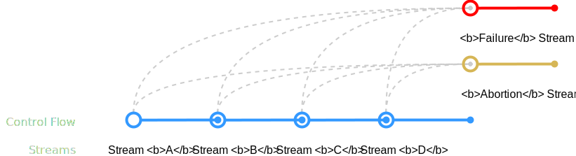

QuickStreams Beta
An Asynchronous Programming Library
for the
QML Programming Language
An Asynchronous Programming Library for the QML Programming Language
Preface
QuickStreams is an asynchronous programming library, inspired by Reactive Extensions, implementing the Reactive Programming Paradigm. It provides a consistent communication protocol for various application components and allows describing complex asynchronous behavior in a more efficient way reducing code complexity and enhancing stability.
Signals & Slots are an integral part of the Qt Quick architecture providing a powerful low level mechanism for responsive asynchronous programming. Despite the fact that Signals & Slots are a very flexible instrument they're not very well suited for the declarative description of rather complex asynchronous operations and transactions.
To increase readability and maintainability of asynchronous code higher level abstraction concepts like Callbacks and more sophisticated concepts like Promises and Futures are used, however, those are simple, primitive concepts, providing only a very limited set of features to solve only the basic problems of declarative, asynchronous control flow and event handling.
The Reactive Extensions approach provides a great concept for asynchronous event handling and processing introducing the Obervable primitive but lacks features for the declaration of custom data stream representing rather complex (nested, abortable, pausable, resumable) transactions.
QuickStreams is built on top of Qt Quick's Signals & Slots mechanism and provides two programming primitives covering both, asynchronous control flow and event handling:
- Streams - Streams declaratively describe asynchronous control flow. They can be chained into sequences and also abstract sequences representing them as one higher stream.
- Observers - Observers process events emitted by streams. Multiple observers can be chained into event processing pipelines and initiate new stream sequences.
Streams
A stream is a stateful entity wrapping a
code fragment.
It's a black box, that once awoken
starts emitting events
until it either
perishes (failure),
dies (closure) or is
killed (abortion)
A stream is a stateful entity wrapping a code fragment. It's a black box, that once awoken starts emitting events until it either perishes (failure), dies (closure) or is killed (abortion)

Almost everything can be represented by a stream.
Sockets, Requests, Computations,
UI Elements and more
Almost everything can be represented by a stream. Sockets, Requests, Computations, UI Elements and more
A stream can be in either of the following states: Dead, Active or Aborted. Once created, it's initially dead (yet not born) and queued to be awoken and executed on the next possible event loop cycle. If another stream takes it's ownership before it's awoken - the execution is deferred until the point the owner stream is closed. This way streams can form asynchronous sequences to be executed serially.
During it's life time a stream emits events, though some of them are lethal. If a stream emits the closure, abortion or failure events - it dies, but in certain circumstances streams can be resurrected and executed again.
- • Closure - The closure event is emitted when a stream finally dies of its own, natural death. It optionally carries an arbitrary set of data to be picked up by the next stream in the sequence, that is to be awoken.
- • Failure - The failure event is emitted when a stream perishes due to an internal failure. It optionally carries an arbitrary set of data to be picked up by the failure recovery stream, that is to be awoken.
- • Abortion - The abortion event is emitted when a stream is killed due to abortion requested from the outside. It awakes the abortion recovery stream if there is one.
- • Custom - A custom event is identified by a name, optionally carrying an arbitrary set of data. Streams can be assigned to be awoken on the events of other streams.
Operators
Operators define control flow patterns
connecting streams and sequences
Operators define control flow patterns connecting streams and sequences
-
attach
Attaches a stream
onto another one -
bind
Binds an obligatory
stream to another one -
event
Subscribes an observer
to a certain event -
retry
Resurrects and re-executes
a stream on certain failures -
repeat
Conditionally resurrects
and re-executes a stream -
failure
Recovers a sequence
from an unexpected failure -
abortion
Recovers a sequence
from an eventual abortion -
delay
Delays the awakening
of an individual stream -
join
Planned for
upcoming releases
Sequences
Streams can form sequences
executing asynchronous operations in serial
Streams can form sequences executing asynchronous operations in serial
One of the fundamentals of asynchronous programming is the declarative creation of asynchronous operation sequences. Streams can form sequences using the attach operator. When a stream is being closed it awakes the next attached stream if there is one, passing the asynchronous result to it, before finally dying.
Using the .attach operator
asyncFunction()
.attach(function(stream, asyncResult) {
console.log('result:', asyncResult)
})In the example above asyncFunction returns a stream. Right after the function call the returned stream gets a new stream attached. The second stream is created by the attach operator out of the given function, it will receive the asynchronous result as asyncResult when the returned stream is closed and thus the second is awoken.
Declaring a sequence of 4 streams
http.post('http://server.org/oranges')
.attach(http.post('http://server.org/apples'))
.attach(http.post('http://server.org/bananas'))
.attach(function(stream) {
console.log('all 3 were posted sequentially')
})When the attach operator receives a stream target it will acquire its ownership preventing it from executing freely, thus forcing it to execute sequentially.
The stream returned by the first http.post is not acquired by any other stream thus considered a free stream, meaning it'll awake and execute in the next event loop cycle.
Wrapping one stream into another
http.get('http://server.org/assets')
.attach(function(stream, assets) {
return http.post('http://server.org/form', assets)
})
.attach(function(stream) {
console.log('successfully posted')
})It's often necessary to pass the results of one asynchronous operation to the next that's attached to it. This cannot be done at the time of the sequence declaration as the results are yet unknown. For this case a stream can be created during the execution of another stream and returned to it as in the example above.
Failure Recovery
Unpredictable stream failures can be
recovered
redirecting control flow to other sequences
Unpredictable stream failures can be recovered redirecting control flow to other sequences
A failure recovery mechanism is an important part of the asynchronous control flow. To prevent undefined behavior and malfunctions caused by unexpectedly failed streams QuickStreams provides the failure sequence operator.
Recovering from unexpected failure
http.get('http://server.org/assets')
.attach(function(stream, assets) {
return http.post('http://server.org/form', assets)
})
.attach(function(stream, postResult) {
console.log('successfully posted:', postResult)
})
.failure(function(stream, error) {
console.log('failure:', error)
})The failure operator acts upon the entire sequence, it defines the stream that is awoken if anywhere in the sequence an unexpected error is thrown.
If in the example above any of the streams fail (network might be unreachable) the sequence is broken and the stream created by the failure operator awoken instead.
Recovering from failure in 2 consecutive sequences
http.get('http://server.org/assets')
.attach(function(stream, assets) {
console.log('retrieved assets:', assets)
})
.failure(http.delete('http://server.org/options'))
.attach(function(stream) {
console.log('failed, but managed to clean up')
})
.failure(function(stream, error) {
console.log('even cleanup failed:', error)
})The failure operator starts a new sequence which could also fail and recover as in the example above.
Retrial
Individual stream failure can sometimes be
expected.
Streams can therefore be resurrected and retried
before finally breaking the sequence
Individual stream failure can sometimes be expected. Streams can therefore be resurrected and retried before finally breaking the sequence
There are situations when certain failures are expected but shouldn't necessarily break the sequence. QuickStreams offers the retry stream operator for such cases.
The retry operator takes an array of error samples and an optional number of times to retry. If a stream with the retry operator applied - fails and the thrown error matches one of the given samples, then the sequence doesn't break, instead the stream is resurrected and executed again.
Recovering from an expected failure
http.get('http://server.org/assets')
.retry([http.Timeout], 3)
.attach(function(stream, assets) {
console.log('retrieved assets:', assets)
})
.failure(function(stream, error) {
console.log('failed retrieving assets:', error)
})A good use case example is a network request. Networks tend to be temporarily unreachable from time to time and requests to it might sometimes fail (timeout). Though most of the time the request should be retried for a couple of times before finally giving up.
The above example demonstrates a similar situations, where the network request is retried for 3 times on timeouts before breaking the sequence and redirecting control flow to the stream provided by the failure operator. But if the request failed nevertheless but due to another error (like a 500 - Internal Server Error) the sequence will break.
Repetition
Streams can be instructed to re-execute
until a certain condition is met
Streams can be instructed to re-execute until a certain condition is met
Asynchronous loops are harder to describe than regular synchronous ones. To avoid unreadable, pseudo-recursive, asynchronous constructs QuickStreams offers the repeat stream operator.
The repeat operator takes a condition (a function returning a boolean) and resurrects the stream it was applied on until the condition returns false.
Declaring an asynchronous loop
var counter = 0
http.get('http://server.org/assets')
.repeat(function() {
counter++
if(counter <= 10) return true
return false
})
.attach(function(stream) {
console.log('repeated http.get 10 times')
})In the example above the repeat operator is applied on the stream returned by the asynchronous http.get method. It uses the context variable counter to keep track of the passed steps and decides on each iteration whether to repeat (resurrect and execute) the stream again or not.
Event Processing
Streams can emit events and subscribe observers
to them.
Observers handle and process those events
Streams can emit events and subscribe observers to them. Observers handle and process those events
Besides special events such as a closure, a failure or an abortion a stream can emit custom events identified names optionally carrying arbitrary data sets.
Defining a counter factory
function spawnCounter() {
QuickStreams.create(function(mainStream) {
var iteration = 0
QuickStreams.timeout(1000, function(stream) {
iteration++
mainStream.event('update', iteration)
stream.close()
})
.repeat()
})
}In the example above spawnCounter creates a continuous stream that will never close. This stream executes an asynchronous infinite loop that fires an event named update every 1000 milliseconds carrying the number of the current iteration.
Catching counter update events
var counterStream = spawnCounter()
counterStream.event('update', function(stream, iteration) {
console.log('current iteration:', iteration)
})
counterStream.event('update', http.get('http://server.org/assets'))
.attach(function(stream, assets) {
console.log('received assets:', assets)
})The events fired by the counterStream created by spawnCounter will always awake 2 new streams on every iteration.
Abortion
Streams and sequences can be recursively
aborted
properly shutting down subordinate sequences
Streams and sequences can be recursively aborted properly shutting down subordinate sequences
One of the hardest asynchronous problems to deal with is abortion. It's relatively hard to describe a sequence of transactions that might be asked to abort at any time. Additionally there could be an obligatory asynchronous clean up sequence involved making the code even more complicated, hard to read and maintain.
QuickStreams makes describing complex, abortable, asynchronous operations easier by providing a way of building higher level abstractions using the Streams Paradigm turning complex stream sequences into abstract, higher level streams using the stream hierarchies approach.QuickStreams provides 2 types of streams: Atomic Streams and Abortable Streams.
Atomic Streams are indivisible and cannot be aborted, whereas Abortable Streams are abortable during their life time. Stream sequences can be thought of as abortable streams and can in fact be wrapped into one.Defining an asynchronous, abortable transaction
function moveDocuments(fromUri, toUri) {
// create and return an abortable stream
// representing the document movement transaction
return QuickStreams.create(function(mainStream) {
var documents = []
var current = -1
var sequence = mainStream.adopt(http.get(fromUri))
.attach(function(stream, docs) {
// bring the results to the main streams context
documents = docs
})
.attach(function(stream, docs) {
return http.post(toUri, documents[current])
})
.repeat(function(isSequenceAborted) {
current++
// stop repeating the atomic http.post stream
// if the sequence (moveDocuments) was aborted
if(isSequenceAborted) return false
if(current < documents.length) return true
return false
})
// execute this async clean up sequence
// after an execution failure or an abortion
// before letting the moveDocuments stream die
function cleanup(error) {
http.delete(toUri)
.attach(function(stream) {
if(error) {
// moveDocuments failed during execution time
mainStream.fail({
execution: error,
cleanup: null
})
} else {
// moveDocuments was aborted
// but managed to clean up successfully
mainStream.close()
}
})
.failure(function(cleanupError) {
// moveDocuments unexpectedly failed
// during the cleanup procedure
mainStream.fail({
execution: error,
cleanup: cleanupError
})
})
}
// clean up, if moveDocuments unexpectedly failed
// before letting the moveDocuments stream die
sequence.failure(function(stream, error) {
cleanup(error)
})
// clean up, if moveDocuments was aborted
// before letting the moveDocuments stream die
sequence.abortion(function(stream) {
cleanup(error)
})
}, QuickStreams.Abortable)
}In the above example moveDocuments represents an abortable, asynchronous transaction, moving documents from one host onto another. It must clean up unfinished work in case of an unexpected failure during its execution as well as in case of an abortion.
moveDocuments creates and returns an Abortable Stream effectively representing an easy to use abstraction over the entire process. The main stream acquires parentship over the underlying sequence using the adopt stream method making the sequence subordinate.
Using the asynchronous moveDocuments function
var movDocStream = moveDocuments(
'http://one.org/documents',
'http://another.org/documents'
)
var sequence = movDocStream.attach(function(stream) {
console.log('moveDocuments successfully completed')
})
sequence.failure(function(stream, error) {
console.log('moveDocuments failed:', error)
})
sequence.abortion(function(stream) {
console.log('moveDocuments successfully aborted')
})
// If moveDocuments didn't complete after 50 milliseconds - abort it!
// The abort won't do anything if the stream's already dead
QuickStreams.timeout(50, function(stream) {
movDocStream.abort()
})Using moveDocuments is quite simple as it's just a regular, abortable stream. When the stream returned by moveDocuments closes - the documents are successfully moved. If it's aborted or fails during its execution it'll properly clean up before moving control flow to one of the given streams in the above usage example.
movDocStream abstracts away the implementation providing a consistent stream interface. All interaction with this stream will reflect onto the underlying, subordinate sequence.Binding
Streams can form atomic sequences
to insure serial execution despite abortion
Streams can form atomic sequences to insure serial execution despite abortion
When a sequence is aborted during the execution of an atomic stream - an attached stream won't be awoken when the stream's closed, the control flow will be redirected to the stream defined by the abortion sequence operator instead.
Sometimes such behavior is not desired. When a certain stream must be invoked even if the sequence was aborted during the execution of its atomic predecessor, the bind stream operator must be used instead of attach.
Binding an obligatory stream to another stream
var sequence = http.get('http://server.org/assets')
.bind(function(stream, assets) {
// The log record is obligatory!
logger.entry('assets were received:', assets)
})
.attach(/* ... */)Even if, in the above example, the sequence is aborted during the execution of the atomic http.get stream - the bound stream performing the logger entry will still be awoken and executed. The control flow will be redirected to the abortion stream only when the bound stream is closed.
Chaining bound streams
var sequence = http.get('http://server.org/assets')
// The log record is obligatory!
.bind(function(stream, assets) {
logger.entry('assets were received:', assets)
})
// the resource deletion is obligatory as well!
.bind(http.delete('http://server.org/assets'))
.attach(/* ... */)Streams can be bound to other bound streams as well forming a chain of obligatory operations. In the example above both, the logger entry and the delete will execute sequentially even if the sequence was aborted during the execution of the atomic http.get stream.